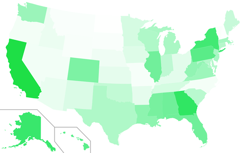

Transmission! Nashville
I will be in Nashville, Tennessee on Monday to participate in Listening to the Poor, a Learning Circle on Poverty hosted by the Inter-Agency Task force on Ministry with the Poor of the United Methodist Church.
The learning circle and dialog will be webcast live Monday, March 8 beginning at 10am CST and go through approximately 1pm. I will be addressing issues of media literacy as it relates to the poor and providing vehicles for voice for the poor. I was invited to speak because of my work with Survival News (“The voices of low-income women”) and the role the Transmission Project has in building a robust and diverse media ecology enabling a world built upon the full participation of society.
If you can’t make the webcast tomorrow, you can watch the media clips I’ll be using as part of my dialogue and I’ll be sure to share clips from the webcast after the fact.
Youth have a role, but so do others
The Transmission Project’s Digital Arts Service Corps was mentioned in a recent news item on the Knight Commission’s blog:
…young people have a special role to play in times of great change and should be engaged in developing the digital information and communication capacities of local communities (recommendation #12). The Commission referred to the potential for creating a domestic version of the Geeks Corps, an international nonprofit that works to expand access to the Internet around the world. There are several examples of such projects happening in the United States already, including the Digital Arts Service Corps and the Public Media Corps in development by the National Black Programming Consortium (NBPC).
The Transmission Project believes that all people have a role in the creation of a robust and diverse media ecology. The Digital Arts Service Corps engages people of all ages, backgrounds and walks of life in building the capacity of nonprofit organizations the use media and technology to strengthen communities. Our Corps members have aged from 17 to 70 and each one brought unique skills, perspectives and experience to their service. Youth is but one barrier to inclusion in the planning and construction of a digital society.
BTOP Applicants, Awards and Poverty Analysis
On Monday we created some graphics illustrating the total grant amounts that were requested for projects by state. New awards have sinced been announced, so I updated that graphic below.

The United States is slowly filling it. We’re using a new algorithm to draw the map, so things should be a little clearer as to where funding is (and isn’t) going.
Grant Requests by Need
I don’t want this data to become a horse-race of trailing zeros, so I thought it would be interesting to weight the dollar somehow. Per-capita is interesting, but because these grants are intended for opportunity I want to throw poverty values into the mix. According to the FCC, affordability is one of the key barriers to broadband adoption. So I calculated the grant amounts by “per-capita living below the poverty level” using the Census Bureau’s 2009 estimated state populations and the 2008 American Community Survey estimates for percent of people below the poverty level.
“Per-capita in poverty” has been calculated by multiplying the state’s total population by the percentage of that population determined to be living beneath the federal poverty level. Dollar amounts are then divided by this population in poverty to give an average dollar-figure for each person living beneath the poverty level in that state. In the maps below, darker colors imply larger dollar amounts and lighter colors imply smaller ones.


This is all grants that have been requested and now things look interesting compared to the unadjusted totals (smaller map at right). All of a sudden the heartland has some color; behemoths California and Texas have paled and New York now has company in the Northeast.
New York state requested the most amount of project funding at just over a $1B. When adjusted per-capita in poverty though, New York is asking for just $398 per person in poverty. By the per-capita in poverty measure, New York only ranks 20th between Georgia (requesting nearly $600M total) and South Carolina (requesting just $275M total).
Alaska, ranking #1 in per-capita in poverty (4th in total grants at $870M), asks for nearly $15,000 per person in poverty—more than the Federal poverty level itself a family of 2. In 2nd is Hawaii at $1,800 per-capita in poverty (but 23rd in total requests).
Ranked last, Virginia trails asking for just $86 per head in poverty, though they rank 42nd in total requests ($69M). On the other hand, the District of Columbia is ranked 43rd in total requests ($63M), but ranked 11th per-capita in poverty at $612 per person in poverty .
One more: Kentucky. Kentucky has the second highest percentage of population living beneath the poverty line at 17.3% (they are tied with Arkansas and Louisiana). They rank 36th in their overall grant requests ($106M) but 46th in grants per-capita in poverty ($143 per person in poverty). On-the-ground issues are complex, but Kentucky is perhaps one example of a state not benefiting according to its need from this process.
Awards adjusted for poverty
Using the per-capita in poverty adjustments, let’s look at awards.

Alaska is still quite the outlier. So far they’ve been awarded $69M total, which is $1,200 per-capita in poverty (granted their population in poverty is less than 6,000 people). Every single state except for Hawaii and Alaska itself, requested less per-capita in poverty (much less).
Following Alaska is West Virginia at $422 per-capita in poverty ($130M in total awards). and South Dakota at $202 per-capita (just $20M in total awards).
Not all Round 1 awards have been announced, only $700M total out of an expected $1.4B (and another $2.6B for Round 2). But so far the average award per-capita in poverty is $79, while the median is just $12. This compares to the total grant awards averaging $24M; the median being less than half-that at $11.5M. Geography aside, there are some clear disparities in awards on a state-by-state level.
I could analyze this all day, but you can download the summary tables (xls) generated from our BTOP/BIP application spreadsheets.
Identifying Applicants by Email Domain

Those last sections involved a lot of dollar-signs, so I want to transition to looking at the applicants themselves. We have two different data sets: the application database and a separate survey the Transmission Project put together with the help of the New America Foundation.
Of 1987 applications total, there were 1265 unique applicants. By analyzing applicants’ email addresses, we can get a general sense of the institutions from which they are applying.
The chart above breaks down how many applicants there were based upon the TLD (top level domain) of their email address. .Gov and .Edu are clearcut and limited expressly to those agencies. Many state agencies use .Us. .Com, .Org and .Net have defined purposes (Commercial, Nonprofit and Network providers), though these definitions are not regulated. So the flaws are that not all agencies use the proper TLD and those using Free Webmail (Gmail, Yahoo, Hotmail) will show up as .com.
This is all applicants, though it could be interesting to break them down by program area (Public Computing, Sustainable Broadband and Networking). That will have to be a project for another day though.
Applicants as Partnerships

From our survey, we asked applicants if their application was a result of partnership with other entities. Interestingly, nearly 70% of applicants surveyed proposed a partnership for their project. Nearly 60% of those partnerships involved a public entity, which contrasts slightly with the email analysis above. This could be a result of a large number of primary applicants being private entities that partnered with public ones, a failure of the email domain analysis, or just a generously worded survey question. Just the predominance of applications involving partnerships is a positive sign for the field and speaks to the gathering power of scaled-up grantmaking.
| Attachment | Size |
|---|---|
| BTOP Application Poverty Data_2-22-10.xls | 32.5 KB |
Analyzing BTOP Feedback, Due Diligence and Public Notice Responses
At the end of January, the NTIA notified more than 1300 applicants that their projects would not be funded. This still left more than 500 project applications still pending for funding. At the time, only $250M for 31 projects had been announced; as more information about Round 2 has become available, we now know that Round 1 will total $1.4 billion in grants to be announced by the end of February (this week!).
In order to learn more about the process and inform Round 2 applicants—there is a scant 2 weeks between Round 1’s anticipated announcements and the closing of the Round 2 application period—we sent a brief survey to project applicants who had their project declined for funding and those whose application was still pending. Of the 800 unique applicants in our survey pool, we received 217 responses between February 10 and February 18, 2010.
In this post, I’ll be sharing information about the project feedback process: public response notices, due diligence, and letters of non-funding.
This analysis is done in collaboration with the New America Foundation’s Open Technology Initiative.
Public Notice Responses
For 30 days beginning in late September, 2009 the NTIA allowed public comments on the nearly 1900 BTOP project applications. According to record, 47% of projects received at least 1 public response.
Interestingly, not a single Public Computing Center or Sustainable Broadband Adoption proposal (39% of all applications) received a Public Response Notice. Only network deployment projects (Last Mile and Middle Mile) received comments.
From our surveys, these notices were overwhelmingly filed by existing network providers and of a critical nature. Of survey particants who received a Public Response Notice, 90% of those notices came from current network operators. The nature of their comments was similar, some respondents characterizing them as “canned filings” and “Standard Generic Comments”: 3/4ths of survey responders’ comments claimed the proposed areas were not underserved or not rural. The shotgun nature of these notices can be witnessed by one public response notice submitted “ironically, by one of the [project] partners”.
Only notice summaries, not including attachments and maps, have not been made public. This makes verifying the notices’ claims difficult.
Other responses included: “Others asking for grants to do the same work in the same area” and “There were weak arguments from other local vendors who clearly do not want the competition.”
On the bright side, 2 survey responders said they received a notice of support for their project.
Due Diligence
It’s understandable that an agency making available $4B in grants wants to follow up with grantees to ensure the honesty and integrity of those projects. And with nearly 1900 applications, it can take some time.

Of the 1300 applicants whose applications were declined for funding, 94% of those surveyed did not receive due diligence prior to receiving notice of non-funding. Of those whose applications are still pending, 60% of those surveyed still have not received due diligence correspondence or contact from NTIA representatives.
Of those applicants who did receive Due Diligence followup, the nature seems to be, as one survey response put it “A broad array across the spectrum of categories”:
- budget, cash flows and project costs
- the methodology for determining unserved areas
- pricing and the sustainability of the business model
- demographics
- program usage
- environmental checklist/questionaire
- network architecture
One responder was quite comprehensive:
“We were requested to provide all Step2-Due Diligence documents including organizing docs, evidence of all indebtedness, environmental checklist and maps, depreciation schedule. We also had a site visit with a few topics being discussed, a few maps reviewed, etc.”
Rejection Letters
I’ve been trying to put a pleasant spin on correspondence applicants received informing them their project would not be funded, but it’s easier to call them what they are: rejection letters. From what we know, there wasn’t much else to the letters than that: 70% of our survey responders received no explicit deficiency or rationale to their rejection. The specific language was “Your application was evaluated by objective reviewers and did not score high enough to move forward in the review process.”.
Of the 30% minority of survey responders who did receive a rationale, they can be summarized as
- incomplete application or lack of supporting documents
- insufficient match
- area could not be verified as rural or underserved
For each of these rationales, there was at least someone who felt their application was misjudged:
- “We did not include two forms the application asked for; which was untrue.”
- “Failure to document 20% match when in fact a 30% match was clearly documented in the application”
- “50 miles from an area that was deemed out of bounds, but not according to the information we had available”
What can Round 2 Applicants learn from this?
Despite the transparency of applicant proposals, the evaluation process itself remains opaque to the detriment of Round 2 applicants.
We asked how Round 1 applicants would adapt their proposal for Round 2. The typical response from those with applications still pending was “based on the reason Round 1 was denied”. This will be difficult.
In light of the short window between Round 1 announcements—and their dearth of information—and the Round 2 application deadline, we recommend applicants move forward with their Round 2 application without the expecation of meaningful feedback from Round 1.
BTOP Applications and Awards by State
We crunched some of our BTOP proposal data over the weekend and all this week we’ll be sharing some interesting data about Round 1 and and some recommendations for Round 2 applications. It’s cat-and-mouse with the NTIA since as soon as we analyse the data, they make some new announcements. A plus at least is that every new announcement implies that we’re moving forward on awarding money to projects and communities.
The following data is as of February 18, 2010, though some new announcements (and another $350 million) were made that very afternoon and are not included here.
This analysis is done in collaboration with the New America Foundation’s Open Technology Initiative.
Where did we start?
The colored map above shows total BTOP grant application amounts by state. Darker states requested more money for projects within that state, lighter states requested less. For example dark blue Alaska applied for $954 million of BTOP project grants (the most) while light blue Rhode Island only $31 million dollars of grants (the least). These are not awards, but initial applications.
What has been awarded?

As you can see by mapping the dollar amounts awarded per state, there is still a broad swath of America awaiting funds. To be fair, there are still 550 proposals pending that should be announced by the end of the month.
Where are applications pending?
During the past 2 months, the NTIA has informed more than 1300 applicants that their applications would not be funded. This still leaves a good number of applications and some interesting shifts in where grants are being requested and could be funded.
Some notes: The numbers above are unadjusted grant dollar amounts. It would probably be more meaningful to adjust them per-capita, or even by rural population or population living under the poverty line. Also, multi-state projects have had their requested amounts divided equally between those states.
More on learning from mistakes
No one is immune to making mistakes.
And I have to express admiration to those who will admit it, learn from it, and make the changes necessary to respond to it.
But to make mistakes and changes at such a high level and talk about it, well, that’s like superhero stuff to me.
Take this week’s announcement from the White House:
White House officials are retooling the administration’s communications strategy to produce faster responses to political adversaries, a more disciplined focus on President Obama’s call for “change” in Washington and an increasingly selective use of the president’s time.
The messaging adjustments are the result of an end-of-the-year analysis in which White House advisers said the president’s communications team had not taken the initiative often enough and had allowed drawn-out debates in Congress, and relentless criticism by Republicans, to drown out his message.
Sure, it’s a political move. But what do any of us do for our organizations that isn’t, in essence, a political move to build support and resources for us to do our work better? We constantly hone our messages, revise our plans, and change our methods.
If we keep our eye on the long view, know why we do what we do, and admit why we’re doing it, we can build movements built on trust and openness.
Administration, I say to you: Keep on learning.
Megapolis Audio Festival
When:
May 14, 2010 - May 16, 2010
Where:
Baltimore, MD
Website:
http://megapolisfestival.org/ The Megapolis Festival is an annual, weekend-long celebration of the craft of DIY audio creation. Artists, documentarians, musicians, and fans come together to share secrets on producing and presenting challenging audio works online, on-air, and on the stage.
Broadband Adoption Accelerators
I’ve been taking time to digest the The Broadband Coalition’s report on Expanding and Accelerating the Adoption & Use of Broadband Throughout the Economy. What I appreciate most about the report is the systemic approach it takes: leveraging existing community infrastructure, programs and organizations while expanding their capacity to include broadband adoption and use.
I think the approach and recommendations from this report could quite easily be adapted to other media access and literacy campaigns.
The report defines Broadband accelerators as programs that:
• Promote and assist affordable home computer and Internet access.
• Are embedded in established community social and institutional networks.
• Are “High-touch” – based on personal interactions and relationships.
• Provide continuing formal as well as peer support to the new adopter through several critical stages of the “adoption curve”: engage, train, equip and support.
• Integrate basic broadband adoption with other strongly motivating opportunities, e.g. employment, education, public safety, healthcare needs, civic and neighborhood improvement.
This approach can be well-informed by the Community Technology Centers movement: while many centers were founded on offering computer training, they evolved into service centers specializing in employment, education, etc. Broadband adoption, like computer literacy before it, is a means, not an end.
To resource these changes, the report makes some key policy recommendations at each level of government:
At a national level, foster evergreen funding sources to support community efforts needed to help nonsubscribers become confident and effective technology users.
Encourage states to adopt policies and strategies that facilitate and support the building of community-based broadband access and adoption programs.
Encourage local initiatives and local funding to support community-based broadband access and adoption programs.
Mail call: Digital Arts Service Corps deadlines

Postcards are hitting the mailboxes this week reminding folks that the deadline to apply for the Digital Arts Service Corps is fast approaching: March 15, 2010. We’ve also just announced our new BTOP Evaluation Assistance Initiative, to help Broadband Stimulus projects (and projects applicants) better measure their impact and effectiveness.
The lady above is listening to a Riesenlautsprecher; that’s German for “really big speaker”. She is composited with the Technical Architecture Framework for Information Management (TAFIM).
{kind=link}
Introducing our BTOP Evaluation Assistance Initiative
The Transmission Project Project is happy to announce a new initiative, the BTOP Evaluation Assistance Initiative, in support of Round 1 recipients and Round 2 applicants to increase the capacity of non-profits to evaluate the efforts of their BTOP projects.
Leveraging our Digital Arts Service Corps and long experience in developing capacity building projects, we will assist in creating evaluation tools and processes to meet the BTOP requirements for a set of awardees. On a national level, we will also aggregate and analyze evaluation data across projects and create case studies and field reports.
This project was developed through the recommendations of the Benton Foundation Toolkit: Philanthropy’s Role in Creating a Connected America:
Track Impact: Philantropists can support the research needed to measure the impact of broadband stimulus funding and identifying best practices for national models